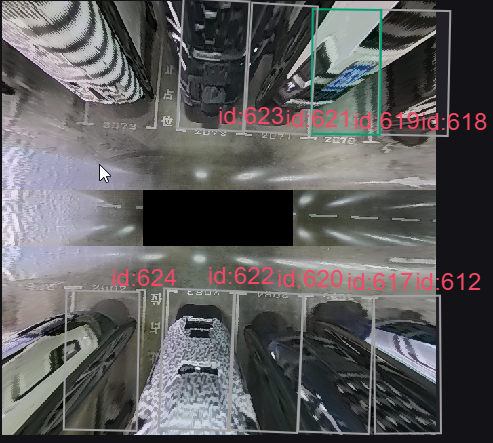
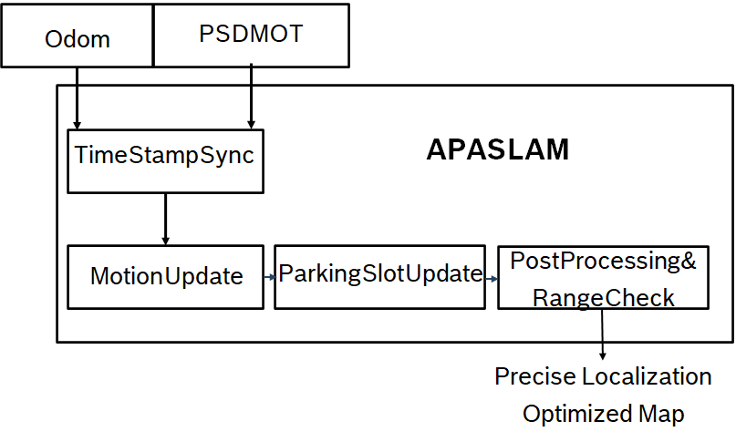
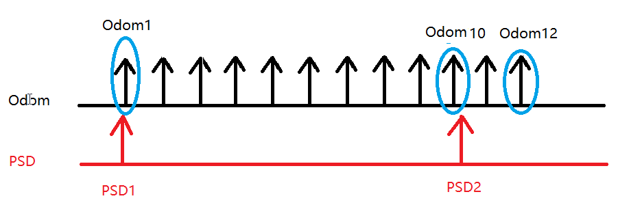
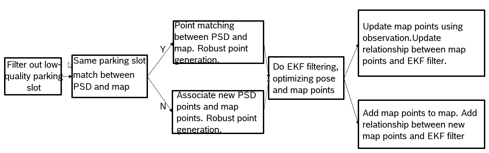

APASLAM Detailed Design
1. Algorithm function and principle
Apaslam is a map and positioning algorithm.The output of Apaslam is shown in Figure 1.The main function of this algorithm is to realize the short -range map of the APA scene on the parking lot library, and can output the position information of the vehicle more accurately.Provide the system to provide a more robust line library library local map information.
The main functions of Apaslam are as follows:
1. Optimize your own positioning with the library information around the vehicle.
2. Use the optimized positioning information to establish a local library chart.

Figure 1 Local diagram established by Apaslam
Second, architecture
The APASLAM algorithm architecture and system frame diagram are shown in Figure 2.

Figure 2 APASLAM algorithm architecture and system frame diagram
This algorithm inputs the library detection information and mileage information. After the time is synchronized, the EKF (extended Karman filter algorithm) is used for prediction and update.And post -processing and inspection of the output, finally output a more accurate positioning information, and provide the bureau's ministry diagram.
Apaslam's input has ODOM information.Mainly use the timestamp information in ODOM, POSE information (X Y YAW), driving direction information.
Apaslam's input has PSDMOT results.Mainly use the warehouse output in PSDMOT, including: timestamp, warehouse type (parallel, horizontal, oblique), warehouse trust, warehouse occupation information, warehouse position position (x, y), warehouse point confidence settingsProfit.
TimesStamPSync is synchronized with ODOM information with the input of PSDMOT.Specifically, to ensure that when a frame of PSDMOT is used, ODOM has used the nearest data that does not exceed the PSDMOT timestamp to ensure that the ODOM data and PSDMOT data time are synchronized.
Motionupdate is a link of the EKFSLAM algorithm.This step is mainly using ODOM mileage meter  The prediction steps of the information as the algorithm roughly speculate that the vehicle's position under the Apaslam coordinate system at this time.
The prediction steps of the information as the algorithm roughly speculate that the vehicle's position under the Apaslam coordinate system at this time.
ParkingsLotupDate is a link of the EKFSLAM algorithm.This step is mainly to use the EKF algorithm to observe with the results of the input PSDMOT, optimize the position under the Apaslam coordinate system, and build a local map.
PostProcessing & RANGECHECK, mainly post -processing and range detection.PostProcessing is mainly to optimize the vertical warehouse, horizontal warehouse, and the lattice point of the two warehouses.RANGECHECK is to detect whether the vertical warehouse, horizontal warehouse, and the length, width, and angle of the length, width, and angle of the position of the position of the warehouse are within a reasonable range and whether there is a overlapping warehouse.
Precise Location & Optimized Map.APASLAM mainly outputs accurate positioning results, including (X Y YAW).And the sub -map under the self -car coordinate system, including the type of the warehouse (parallel, horizontal, oblique), warehouse occupation information, warehouse ID, and four corner points.
3. Timestampsync

Figure 3 Apaslam's timestamp synchronization algorithm
This chapter mainly introduces the timestamp synchronization algorithm.See Figure 3 in detail.
At the time of the system time, APASLAM received Odom1 and PSD1 frames.
At the time of the system time, Apaslam received PSD2 and ODOM12 frames.At this time, because the timestamp of the PSD2 in the data is the closest to the timestamp of ODOM10, it is generated at the same time.At the time of the system T2, in Apaslam, use ODOM1 to ODOM10 data to do MotionUpdate. Odom11 and ODOM12 are placed in the buffer without processing.After the MotionUpdate is executed, then use PSD2 to do ParkingsLotupDate.
Fourth, motionupdate
That is, the prediction part of Apaslam.
Mileage meter input ODOM The input is used as a predicted quantity of the Apaslam filter POSE.ODOM The larger, the greater the POSE POSE prediction of the EKFSLAM filter. At the same time, the greater the noise, the greater the uncertainty of the collaborative party.vice versa.
5. ParkingsLotupdate

Figure 4 ParkingsLotupDate algorithm flowchart
Filter Out Low-Quality Parking Slot.The input PSDMOT library is filtered out of the low -quality library of misunderstanding and confident bottom.
Same Parking Slot Match Between PSD and Map.What are the section of the input PSDMOT result.If you match, take the route of Y above.If there is no match, take the route below n.
Point Matching Between PSD and Map. Robust Point Generation. Due to the map library and PSD matching of the Apaslam maintenance, the matching point of the matching PSDMOT point is generated.
Associate New PSD POINTS and Map Points. Robust Point Generation. Since the map library position maintained by Apaslam is not matched with PSD, the new PSDMOT point of viewing points are generated.
Do ekffiltering, optimizing pose and map points.For the new map point, add to the filter.For some map points, optimize the position and position of the location of the gallery.
Add observation points to map. Add Relationship Between New Map Points and Ekf Filter. Add the observation point to the map point.Establish a map point and EKF filter.
Update Map Points uservice.Update Relationship Between Map Points and Ekf Filter. Use the observation point to update the map point.Update the correlation between the map point and the EKF filter.
6. PostProcessing & RangeCheck
PostProcessing.Because the bottom point of the warehouse is often not observed.So sometimes it is not very neat.Apaslam will be treated at the back of the library at this step, so that the library is as rectangular or parallel to the parallel.
RangeCheck.The output warehouse length, width, angle, and whether there are overlap for inspection.When a problem is found, do the corresponding fault treatment according to the need.